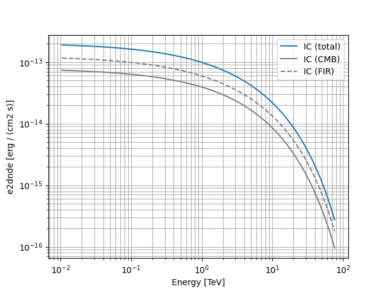

Note
Click here to download the full example code
Naima spectral model#
This class provides an interface with the models defined in the naima models module.
The model accepts as a positional argument a Naima
radiative models instance, used to compute the non-thermal emission from populations of
relativistic electrons or protons due to interactions with the ISM or with radiation and magnetic fields.
One of the advantages provided by this class consists in the possibility of performing a maximum
likelihood spectral fit of the model’s parameters directly on observations, as opposed to the MCMC
fit to flux points featured in
Naima. All the parameters defining the parent population of charged particles are stored as
Parameter and left free by default. In case that the radiative model is
Synchrotron, the magnetic field strength may also be fitted. Parameters can be
freezed/unfreezed before the fit, and maximum/minimum values can be set to limit the parameters space to
the physically interesting region.
Example plot#
Here we create and plot a spectral model that convolves an ExpCutoffPowerLawSpectralModel
electron distribution with an InverseCompton radiative model, in the presence of multiple seed photon fields.
from astropy import units as u
import matplotlib.pyplot as plt
import naima
from gammapy.modeling.models import Models, NaimaSpectralModel, SkyModel
particle_distribution = naima.models.ExponentialCutoffPowerLaw(
1e30 / u.eV, 10 * u.TeV, 3.0, 30 * u.TeV
)
radiative_model = naima.radiative.InverseCompton(
particle_distribution,
seed_photon_fields=["CMB", ["FIR", 26.5 * u.K, 0.415 * u.eV / u.cm ** 3]],
Eemin=100 * u.GeV,
)
model = NaimaSpectralModel(radiative_model, distance=1.5 * u.kpc)
opts = {
"energy_bounds": [10 * u.GeV, 80 * u.TeV],
"sed_type": "e2dnde",
}
# Plot the total inverse Compton emission
model.plot(label="IC (total)", **opts)
# Plot the separate contributions from each seed photon field
for seed, ls in zip(["CMB", "FIR"], ["-", "--"]):
model = NaimaSpectralModel(radiative_model, seed=seed, distance=1.5 * u.kpc)
model.plot(label=f"IC ({seed})", ls=ls, color="gray", **opts)
plt.legend(loc="best")
plt.grid(which="both")

YAML representation#
Here is an example YAML file using the model:
Out:
components:
- name: naima-model
type: SkyModel
spectral:
type: NaimaSpectralModel
parameters:
- name: amplitude
value: 1.0e+30
unit: eV-1
error: 0
min: .nan
max: .nan
frozen: false
interp: lin
scale_method: scale10
is_norm: true
- name: e_0
value: 10.0
unit: TeV
error: 0
min: .nan
max: .nan
frozen: false
interp: lin
scale_method: scale10
is_norm: false
- name: alpha
value: 3.0
unit: ''
error: 0
min: .nan
max: .nan
frozen: false
interp: lin
scale_method: scale10
is_norm: false
- name: e_cutoff
value: 30.0
unit: TeV
error: 0
min: .nan
max: .nan
frozen: false
interp: lin
scale_method: scale10
is_norm: false
- name: beta
value: 1.0
unit: ''
error: 0
min: .nan
max: .nan
frozen: false
interp: lin
scale_method: scale10
is_norm: false